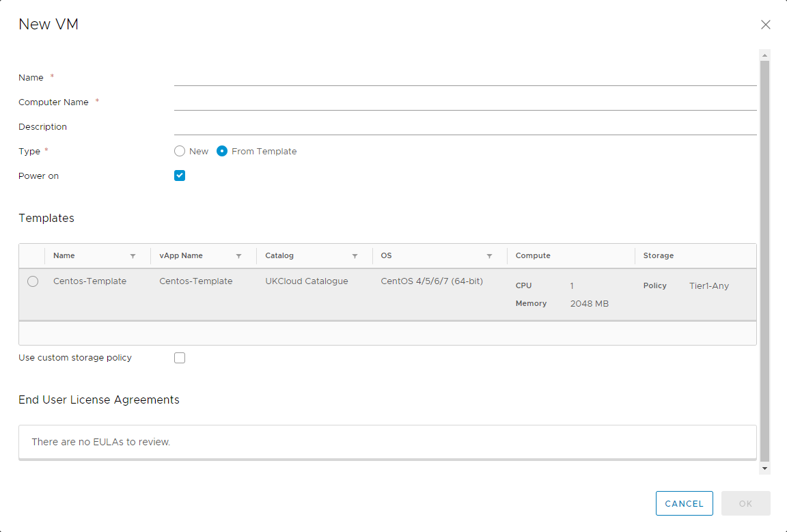

How to create a VM from a template
Overview
To simplify the process of creating a VM, you can use a pre-built VM template from a catalog.
For information about creating a VM from scratch, see How to create a VM from scratch.
Creating a VM from a template
In the vCloud Director Virtual Datacenters dashboard, select the VDC that contains the vApp in which you want to create the VM.
In the left navigation panel, select vApps to view a list of vApps within the VDC.

In the card for the vApp in which you want to create the VM, select Actions then Add VM.

Tip
To create a new vApp, see How to create a vApp.
To create a standalone VM, in the left navigation panel, select Virtual Machines, then click New VM.
In the Add VMs dialog box, click Add Virtual Machine.

In the New VM dialog box, from the Type radio buttons, select From Template.
Enter a Name, Computer Name and Description for your VM.
Note
Name is a name to identify the VM, Computer Name is the host name of the VM.
The Computer Name is copied from the Name field but can contain only alphanumeric characters and hyphens so you may need to edit it if your VM Name contains spaces or special characters.
In the Templates section, select the template that you want to use for your VM, depending on your required operating system and VM size.

Tip
Creating vApp catalogs is covered in How to create a vApp catalog
When you're done, click OK.
Important
By default, the Power on check box is selected. If you do not want the VM to power on and start incurring charges immediately, make sure to deselect this check box.
Back in the Add VMs dialog box, you can create more VMs or click Add when you're done.
You can monitor progress in the Add VMs dialog box, or click Cancel to return to the list of vApps while the VM is created in the background.
In the left navigation panel, select Virtual Machines to view a list of VMs within the VDC.

In the card for your new VM, select Details.
In the General section, from the Storage Policy list, select a storage policy to assign the VM to.
Note
We recommend using the
*-*-*-Anyoption as this will ensure your VMs are balanced evenly across all storage pools. However, you could use this option to specifically separate VMs on different storage if required for high availability purposes. For example, you could specifically place VMs on*.*.*-Storage1as opposed to*.*.*-Storage2. For more information, visit the Knowledge Centre.
Expand the Hardware section.
Here, you can:
Configure CPU and Memory.
In the Storage section, you can configure storage or Add more disks.
In the NICs section, you can Add the VM to a network and select an IP Mode to determine how IP addresses are assigned:
DHCP vCloud Director interacts with the OS via VMware Tools to use DHCP rather than static IPs. You'll need to define a DHCP server on your edge gateway. Check with UKCloud or your organisation administrator that this is set up before you use it.11. how many network interface controllers (NICs) you need in the first instance.
Static - IP Pool is the usual method, which injects an IP address into the VM via VMware Tools from a list of available IP addresses. The address may vary with each boot, but there is a check box to keep IP address assignments elsewhere within the UI once the VMs are created.
Static - Manual is similar to IP Pool, but you need to enter a valid IP Address from the pool, which the VM will then keep.
Tip
If the MAC address for a newly added NIC is blank, click Save to generate one.

When you're done, click Save.
Feedback
If you find an issue with this article, click Improve this Doc to suggest a change. If you have an idea for how we could improve any of our services, visit the Ideas section of the UKCloud Community.